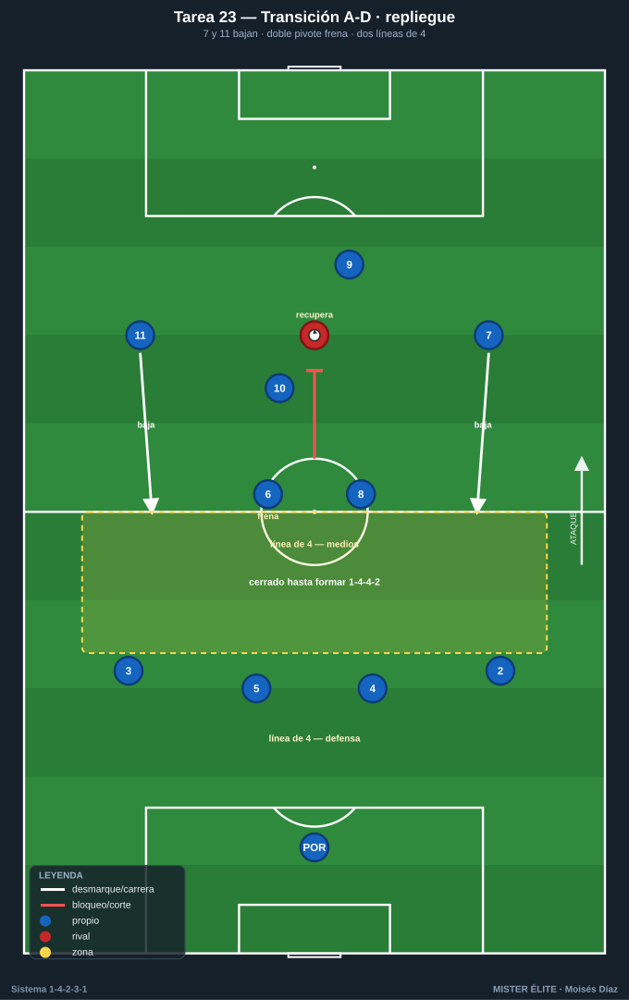
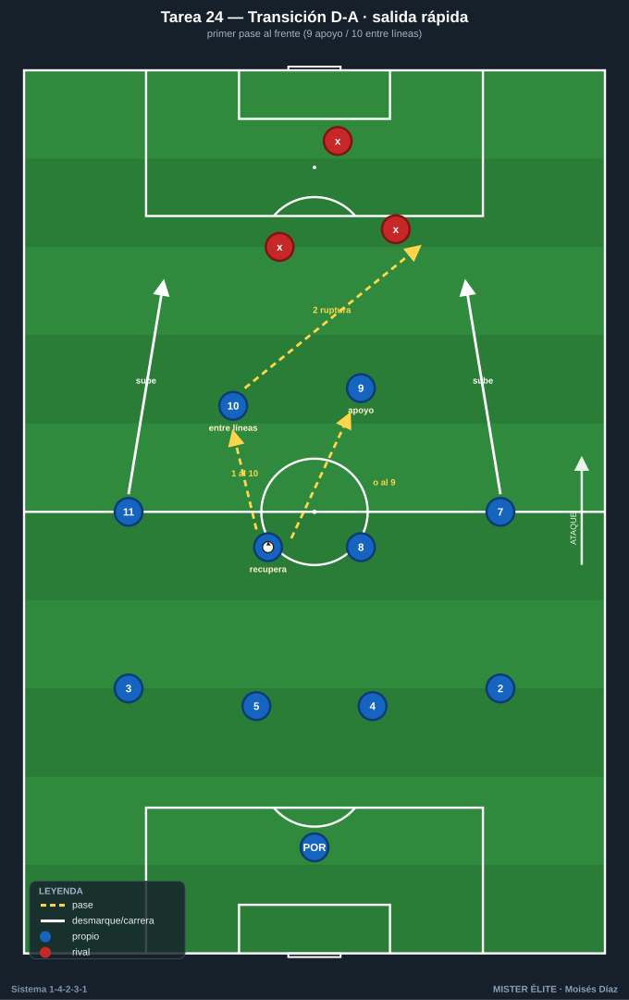
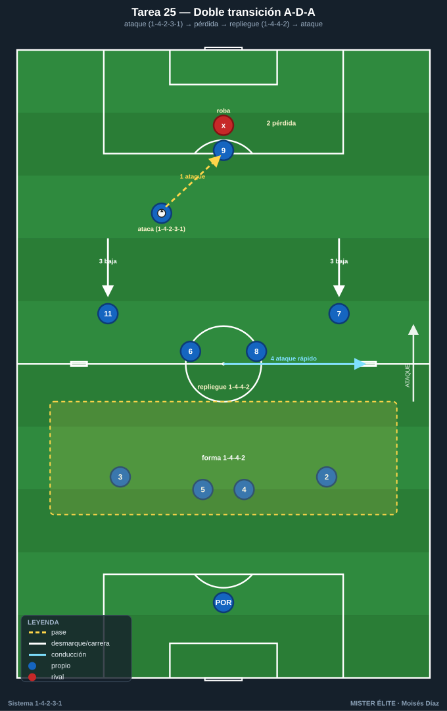
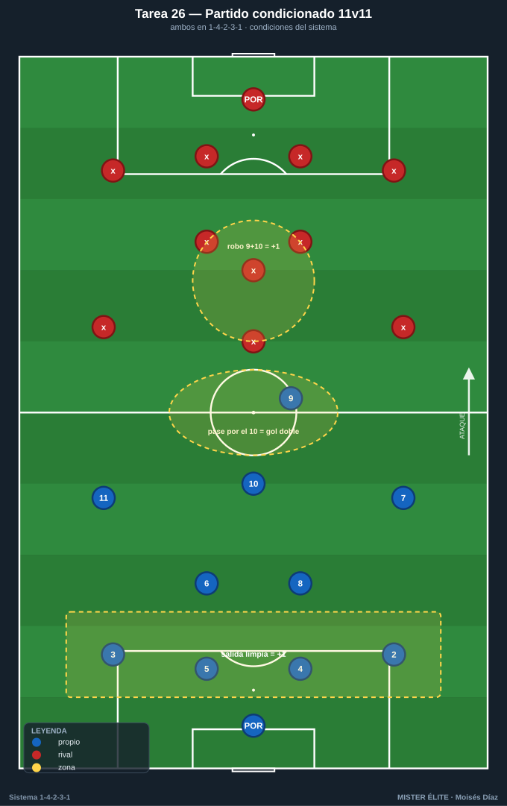

Bloque 6 · Transiciones (A-D, D-A) + partido condicionado (T23–26)
El cierre integrador. Encadenar las dos transiciones y los dos cambios de forma (1-4-2-3-1 ↔ 1-4-4-2) y llevarlo todo a un partido real con reglas del sistema. Categorías mayoritariamente S. Leyenda de pizarras en el README. Atacar siempre hacia arriba.
Tarea 6.1 — Transición A-D: repliegue ordenado a 1-4-4-2 tras pérdida
- Objetivo: ejecutar la transición ataque-defensa replegando la estructura a 1-4-4-2 con los extremos bajando, frenando la contra rival.
- Organización: 70x55 m, 2 porterías con POR. Azules atacan en 1-4-2-3-1; al perder deben replegar.

- Desarrollo: ataque azul; al perder, repliegue inmediato a 1-4-4-2 (7 y 11 bajan), frenar la contra y reorganizar el bloque medio.
- Provocaciones: (1) Tras la pérdida, ningún rival puede progresar entre las dos líneas de 4 hasta que estén formadas; si el rival mete un pase interior antes de formarse el 1-4-4-2 = punto. (2) Recuperar y volver a 1-4-2-3-1 ofensivo = +1. (3) El primer jugador en frenar debe ser el más cercano, no siempre el pivote.
- Variantes: fácil = rival contra controlado; medio = contra a 2 toques; difícil = contra libre y rápida.
- Coaching: "frena-cae-forma"; el balón se presiona, el resto cae a su línea; comunicación de los extremos al bajar.
- Duración / Categoría: 4x5 min · S
Tarea 6.2 — Transición D-A: salida rápida desde el 1-4-4-2 buscando al 9 y al 10
- Objetivo: tras recuperar en bloque 1-4-4-2, lanzar la transición ofensiva veloz reactivando al 9 (referencia) y al 10 (entre líneas), con los extremos volviendo a subir.
- Organización: 70x55 m, 2 porterías con POR. Recuperaciones provocadas en bloque medio.

- Desarrollo: al recuperar, primer pase al 9 (que se apoya) o al 10 (entre líneas); los extremos 7/11 vuelven a la altura de ataque y se ataca con verticalidad.
- Provocaciones: (1) El primer pase tras recuperar debe ir hacia delante (al 9 o al 10); prohibido el primer pase hacia atrás. (2) Finalizar la transición en menos de 8 s = doble. (3) Si el 10 recibe de cara en la transición y conecta con ruptura = +1.
- Variantes: fácil = rival repliega lento; medio = rival repliega normal; difícil = rival contrapresiona la recuperación.
- Coaching: "recuperar = mirar al frente"; apoyo y ruptura simultáneos (9 baja, extremo rompe); decisión rápida del primer pase.
- Duración / Categoría: 4x5 min · S
Tarea 6.3 — Doble transición: ciclo A-D-A con cambio de estructura
- Objetivo: encadenar las dos transiciones y los dos cambios de forma (1-4-2-3-1 ↔ 1-4-4-2) en un mismo ciclo, bajo fatiga y decisión.
- Organización: 75x60 m, 2 porterías con POR + 2 mini-porterías de contra. Posesión que cambia de manos por reglas de pérdida forzada.

- Desarrollo: ciclo continuo: ataque (1-4-2-3-1) → pérdida → repliegue (1-4-4-2) → recuperación → ataque rápido. El cuerpo técnico provoca pérdidas para encadenar.
- Provocaciones: (1) Cada equipo debe verbalizar y ejecutar el cambio de forma en cada cambio de posesión (un evaluador valida que los extremos suben/bajan correctamente). (2) Gol en transición (menos de 10 s tras recuperar) = doble. (3) No formar la estructura correcta dos veces seguidas = posesión al rival.
- Variantes: fácil = pausas entre ciclos; medio = ciclo continuo; difícil = inferioridad temporal del que recupera.
- Coaching: liderazgo en los cambios de fase; economía de esfuerzo en el repliegue, explosividad en la salida; "la forma se cambia corriendo, no andando".
- Duración / Categoría: 4x4 min, descansos amplios · S
Tarea 6.4 — Partido condicionado 11v11: 1-4-2-3-1 con reglas del sistema
- Objetivo: integrar todos los comportamientos del sistema (salida, doble pivote, 10 entre líneas, presión 9+10, amplitud, mutación) en formato real competitivo.
- Organización: campo completo, 2 porterías con POR. Ambos equipos en 1-4-2-3-1; el cuerpo técnico aplica las condiciones.

- Desarrollo: partido con marcador y condiciones acumulativas que premian los comportamientos del sistema.
- Provocaciones: (1) Gol tras pasar por el 10 entre líneas = doble. (2) Gol tras salida limpia superando la primera presión = +1 extra. (3) Recuperar ya formados en 1-4-4-2 = se conserva la posesión con ventaja; conceder progresión central por no proteger con el doble pivote = el rival saca con ventaja. (4) Presión válida de la dupla 9+10 que provoca pérdida rival en su campo = +1.
- Variantes: fácil = 1 sola condición activa; medio = 2-3 condiciones; difícil = todas las condiciones + tiempo reducido.
- Coaching: feedback por fases; congelar imagen en errores de estructura; reforzar las referencias del sistema más que el resultado.
- Duración / Categoría: 2-3 x 8-10 min · S